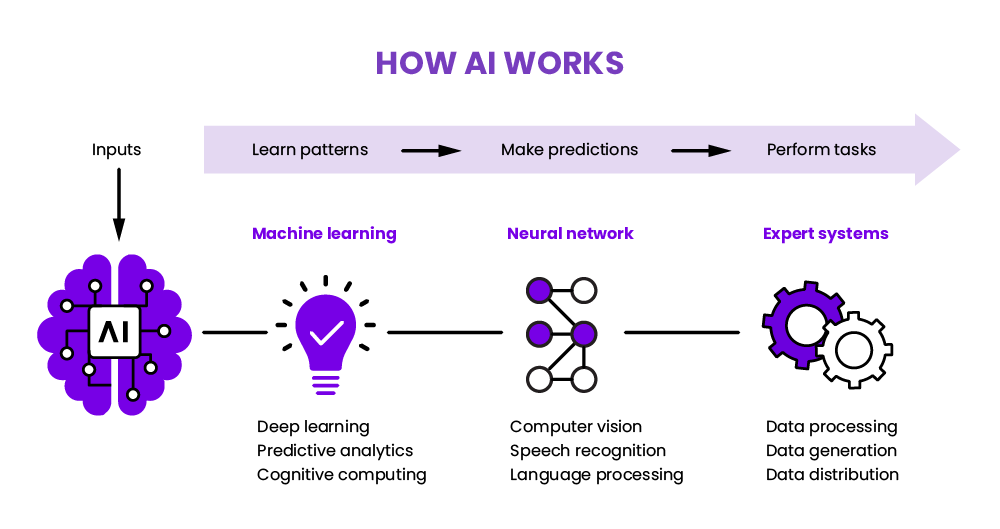
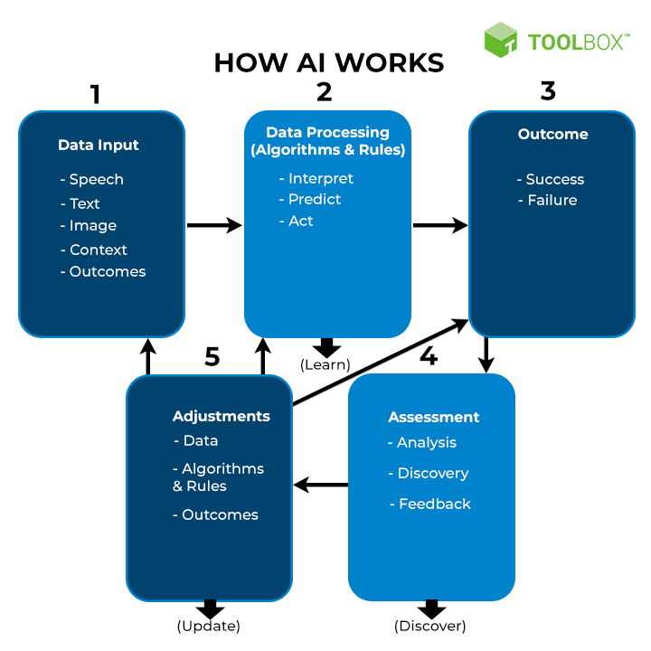

Artificial intelligence (AI), in its broadest sense, is intelligence exhibited by machines, particularly computer systems. It is a field of research in computer science that develops and studies methods and software that enable machines to perceive their environment and use learning and intelligence to take actions that maximize their chances of achieving defined goals.Such machines may be called AIs. Some high-profile applications of AI include advanced web search engines (e.g., Google Search); recommendation systems (used by YouTube, Amazon, and Netflix); interacting via human speech (e.g., Google Assistant, Siri, and Alexa); autonomous vehicles (e.g., Waymo); generative and creative tools (e.g., ChatGPT, Apple Intelligence, and AI art); and superhuman play and analysis in strategy games (e.g., chess and Go).However, many AI applications are not perceived as AI: "A lot of cutting edge AI has filtered into general applications, often without being called AI because once something becomes useful enough and common enough it's not labeled AI anymore. Alan Turing was the first person to conduct substantial research in the field that he called machine intelligence.Artificial intelligence was founded as an academic discipline in 1956,by those now considered the founding fathers of AI: John McCarthy, Marvin Minksy, Nathaniel Rochester, and Claude Shannon.The field went through multiple cycles of optimism, followed by periods of disappointment and loss of funding, known as AI winter. Funding and interest vastly increased after 2012 when deep learning surpassed all previous AI techniques, and after 2017 with the transformer architecture.This led to the AI boom of the early 2020s, with companies, universities, and laboratories overwhelmingly based in the United States pioneering significant advances in artificial intelligence. The growing use of artificial intelligence in the 21st century is influencing a societal and economic shift towards increased automation, data-driven decision-making, and the integration of AI systems into various economic sectors and areas of life, impacting job markets, healthcare, government, industry, education, propaganda, and disinformation. This raises questions about the long-term effects, ethical implications, and risks of AI, prompting discussions about regulatory policies to ensure the safety and benefits of the technology. The various subfields of AI research are centered around particular goals and the use of particular tools. The traditional goals of AI research include reasoning, knowledge representation, planning, learning, natural language processing, perception, and support for robotics.[a] General intelligence—the ability to complete any task performable by a human on an at least equal level—is among the field's long-term goals. To reach these goals, AI researchers have adapted and integrated a wide range of techniques, including search and mathematical optimization, formal logic, artificial neural networks, and methods based on statistics, operations research, and economics. AI also draws upon psychology, linguistics, philosophy, neuroscience, and other fields.
Artificial intelligence commonly brought to mind the implementation of robots. As technology evolved, previous benchmarks that define artificial intelligence became outdated. Technologies that enable Artificial Intelligence include: Computer vision enables computers to identify objects and people in pictures and photos. Natural language processing (NLP) allows computers to understand human language. Graphical processing units are computer chips that help computers form graphics and images throughmathematical calculations. The Internet of Things is the network of physical devices, vehicles, and other objects embedded with sensors, software, and network connectivity, that collect and share data. Application programming allows two or more computer programs or components to communicate with each other.
 Artificial intelligence can be applied to many sectors and industries, including the healthcare industry for suggesting drug dosages, identifying treatments, and aiding in surgical procedures in the operating room. Other examples of machines with artificial intelligence include computers that play chess and self-driving cars. AI has applications in the financial industry, where it detects and flags fraudulent banking activity. Applications for AI can help streamline and make trading easier. In 2022, AI entered the mainstream with applications of Generative Pre-Training Transformer. The most popular applications are OpenAI's DALL-E text-to-image tool and ChatGPT. According to a 2024 survey by Deloitte respondents who are leaders in the AI industry.
| s.no | Advantages | Disadvantages |
|---|---|---|
| 1 | Eliminates The Human Error and Risk | Costly implementation |
| 2 | 24/7 Availability | Lack of emotion and creativity |
| 3 | Unbiased decision making | No improvement with experience |
| 4 | Repetitive jobs | Reduced jobs for humans |
| 5 | Cost reduction | Ethical problems |
Early diagnosis of diseases in healthcare using AI that analyzes patterns and data to predict when/how a patient is likely to develop a specific disease. Virtual assistant chatbots in customer service can handle simple and common requests, and help route requests to human resources for more complex tasks. These also help to provide support during off-hours and weekends. Early detection of fraud in financial institutions. The AI analyzes patterns around fraud to catch it as early as possible, and prevent it from happening entirely. Creation of predictive analysis to help a business project possibilities for their future, helping to prevent poor decisions and support strong ones.


AI and machine learning technology is used in most of the essential applications of the 2020s, including: search engines (such as Google Search), targeting online advertisements, recommendation systems (offered by Netflix, YouTube or Amazon), driving internet traffic, targeted advertising (AdSense, Facebook), virtual assistants (such as Siri or Alexa), autonomous vehicles (including drones, ADAS and self-driving cars), automatic language translation (Microsoft Translator, Google Translate), facial recognition (Apple's Face ID or Microsoft's DeepFace and Google's FaceNet) and image labeling (used by Facebook, Apple's iPhoto and TikTok). The deployment of AI may be overseen by a Chief automation officer (CAO).
The future of AI is a topic of great interest and speculation. Several key trends and potential developments are likely to shape the evolution of AI over the coming years:
Artificial Intelligence Review is a fully open access journal publishing state-of-the-art research in artificial intelligence and cognitive science.